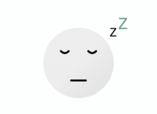
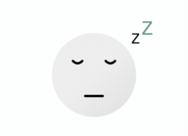

THE NEW YORK TIMES — #FOCUS — 10 MIN
Cal Newport: How to Actually, Truly Focus on What You're Doing
By Tim Herrera
↓ Browse topics and resources
Stress, Sleep, Focus, Anxiety, Confidence, Motivation ....
 



THE NEW YORK TIMES — #FOCUS — 10 MIN
By Tim Herrera
YOUTUBE — #SLEEP — 1H 55MIN
BY JOE ROGAN

THE GUARDIAN — #SLEEP — 10 MIN
BY HANNAH DEVLIN

YOUTUBE — #FOCUS — 9 MIN
BY MATT D'AVELLA